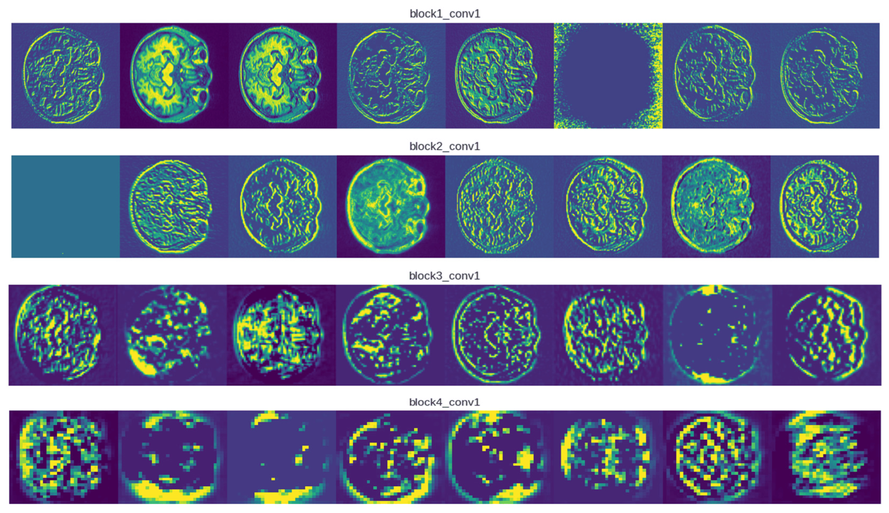

I am a Research Software Developer at Microsoft Research, India, working with the FoSSE group. My work focuses on developing scalable solutions at the intersection of AI and Software Engineering, under the guidance of Suresh Parthasarathy, Arun Iyer, and Bash. My primary research centers on architecting efficient Large Language Model (LLM) frameworks for programming-centric tasks. Beyond this, I'm passionate about leveraging AI for Social Good, developing robust Medical Diagnostics, and advancing the frontiers of multimodal intelligence through cross-modal learning and representation.
I graduated from Delhi Technological University (formerly known as DCE) in 2024 with a major in Biotechnology and a minor in AI & Machine Learning. Throughout my academic journey, I've had the privilege of collaborating with researchers from prestigious institutions including Virginia Tech, University of California Berkeley, and University of Technology Sydney. My industrial experience spans roles at Siemens and Samsung AI Lab, where I contributed to cutting-edge projects in computer vision and Graph Neural Networks.
Apart from my research work, I was honored as the National Level Winner of Smart India Hackathon, 2022 and awarded ₹1 Lakh for developing a Computer Vision based software stack in Robotics and Drones. I was also selected to attend the Oxford ML Summer School in 2024.
Publications
-
 (1).png) PoliMeme: Exploring Offensive Meme Propagation in the Israel-Palestine ConflictACM [Workshop on Multimodal Content Analysis for Social Good], 2025Accepted(Sharing soon!)
PoliMeme: Exploring Offensive Meme Propagation in the Israel-Palestine ConflictACM [Workshop on Multimodal Content Analysis for Social Good], 2025Accepted(Sharing soon!) -

Ensemble Transfer Learning for Distinguishing Cognitively Normal and Mild Cognitive Impairment Patients Using MRIMDPI, 2024View Publication →
Affiliations